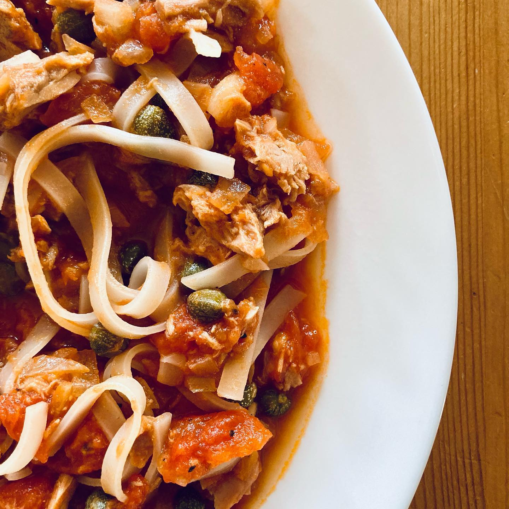

Kapary podľa @sweetmirabell — Normy Jedál
Tuńczyk z pomidorami 🤩 #tuńczyk #tuna #tunczykwsosiewlasnym #tuńczykwpomidorach #pomidory #pomidory🍅 #tuńczyk🐟 #pomidor #tomatoes🍅 #tomato #pomidoryzpuszki #kapary #kapary😍 #makaron #makaronryżowy @citidiet #pycha #poprostupycha #obiad #zdrowyobiad #zdrowystylzycia #zdrowadieta #zdrowejedzenie #fit #fitobiad #😋